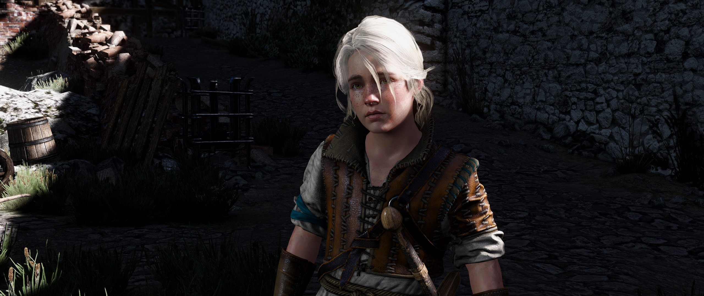
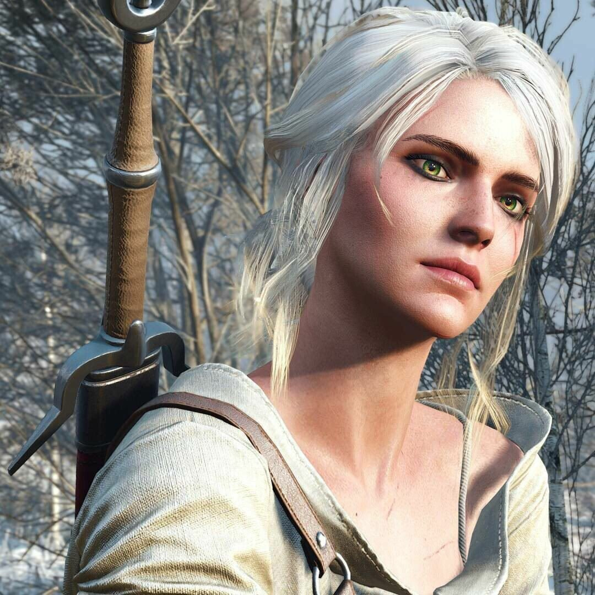

Цирилла Фиона Элен Рианнон, Львёнок из Цинтры (Фалька), Цири – дитя Старшей Крови, чародейка, наследная принцесса Цинтры.
 В мае 1253 года у юной принцессы Цинтры и её мужа герцога Дани рождается ребёнок-неожиданность, ребенок-Предназначение, маленькая Цирилла. Она отличалась своей жизнерадостностью, чрезмерной активностью и любопытством. Большую часть времени маленькая бунтарка проводила в компании мальчишек. Она очень быстро взрослела.
Отец девочки давным-давно пообещал Геральту дать ему то, что он пожелает. Именно девочка стала Предназначением ведьмака.
Морские волны забирают у девочки родителей, когда ей было всего пять лет. С тех пор девочка переходит под опеку бабушки, великой королевы Калантэ. Няньки Цири рассказывают ей истории об ее Предназначении, за что получают гневные вычитания со стороны королевы и тем самым укрепляют веру девочки в истинность этих легенд.
Когда Цири исполняется десять лет бабушка демонстрирует ей потрет молодого парня, который был первым претендентом на роль жениха. Девочке он кажется симпатичным, и она соглашается на встречу. Каково было ее разочарование, когда картинка далеко отличается от оригинала. Дабы не разочаровывать свою бабушку, которая уже запланировала женитьбу, Цирилла решает бежать.
Заблудившись в лесу, потеряв лошадь и сопровождающего оруженосца, девочка сталкивается с огромной сороконожкой. Но на помощь ей приходит беловолосый ведьмак, Геральт.
Их пути вновь расходятся, и Цирилла возвращается в Цинтру. Вследствие войны ей вновь приходится бежать, чтобы спастись. Из города, укутанного пламенем, ее вывозит всадник в черном одеянии. Сама девочка не помнит, каким чудом ей удалось вырваться из стен замка и остаться в живых.
После помощи купцу Йургу отбиться от местных чудищ, Геральт получает ранения. Благодарный Йург обещает отдать ведьмаку то, что застанет дома. Этой неожиданностью является девочка Цири, которую приютила его супруга. Спустя некоторое время члены семьи, которые коснулись «Предназначения», погибают.
В Каэр Морхене девочка начинает изучать ведьмачье искусство в котором демонстрирует огромный потенциал, но не подвергается испытанию травами. Лишь через время руины навещает Трисс Меригольд и так же принимает участие в воспитании Цири. В храме Мэлителе в Элландере девочка впервые встречается с Йеннифер, которая становится её наставницей, а в будущем даже матерью. Цири так же обучалась в школе для чародеек на Танедде. После бунта ей вновь приходится бежать. Благодаря порталу она оказывается в пустыне Корат. Её тут же схватывают нильфгаардские ловчие в ожидании получить за юную королевскую кровь хорошее вознаграждение.
После всего пережитого Цирилла приобрела такие качества, как смелость, отверженность и решительность. Ей пришлось рано повзрослеть, хотя в душе она так и остается маленькой девочкой. Ее всегда привлекает риск и опасность.
Правда в некоторых даже пустяковых ситуациях у нее проявляются такие качества как стеснительность, и даже неуверенность.